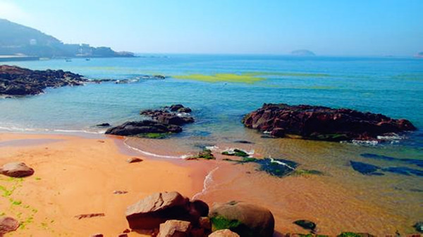
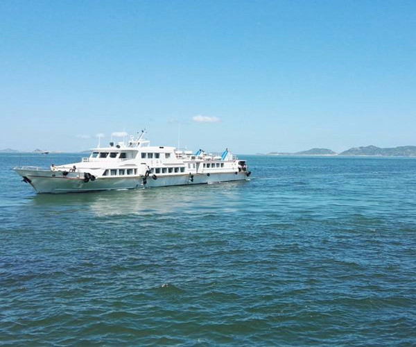
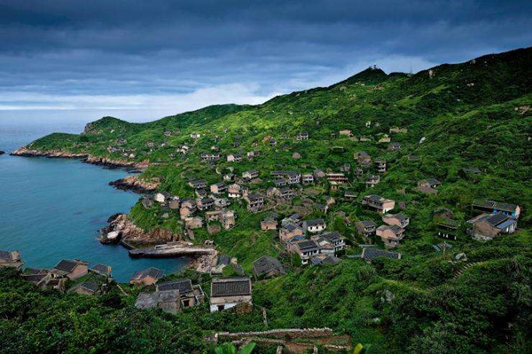

各地-小洋山-枸杞岛-小洋山-各地
露营垂钓
3天2夜
- 阳光沙滩，美味海鲜任你挑
篝火晚会，嗨翻全场
捕鱼海钓，增强团队凝聚力
【产品亮点】
格仙岛的海被誉为上海周边最蓝的大海，来到这个原始的小岛上，最大的乐趣莫过于与海同乐，在枸杞岛最大的沙滩去游泳、戏水、玩沙，和团队一起出海捕鱼，一起篝火狂欢，享受海鲜大餐，在欢乐的时光中建立深厚的友谊，相互的默契，团队的凝聚力。
【线路介绍】
格仙岛就像天堂，这里的海水清澈纯净，蓝天碧波，水天相连，一望无际，养殖贻贝的白色浮子在阳光照耀下闪烁着点点银光。渔舟在碧波荡漾中穿梭，构成了一幅美丽的海上牧场图。当踏上枸杞岛的一刹那，时间仿佛慢了下来，去大王沙滩踏沙看海；在小西天赏日落；山海奇观等待日出，静坐东崖绝壁听涛赏景，或者去渔家吃肥美的海鲜吃到肚撑才算是不枉来一次枸杞岛。

Day1 各地-小洋山-格仙岛
6:30客人指定地点集合上车，前往小洋山，途中教练进行破冰仪式，一路欢声笑语，开始我们美妙的海岛之旅。约一个半小时来到小洋山沈家湾码头，我们购票上船，一路海景无限，轻轻的海风吹拂着你的脸庞，带着她独有的咸咸的味道，要注意一个奇妙的变化哦！海水颜色在慢慢由黄转蓝。

12:30 到达格仙岛，酒店入住后开始午餐，午餐之后，跟随领队前往枸杞最东面的嵊山岛，这里是中国最东面有人居住的岛屿。

格仙岛就像天堂，这里的海水清澈纯净，蓝天碧波，水天相连，一望无际，养殖贻贝的白色浮子在阳光照耀下闪烁着点点银光。渔舟在碧波荡漾中穿梭，构成了一幅美丽的海上牧场图。当踏上枸杞岛的一刹那，时间仿佛慢了下来，去大王沙滩踏沙看海；在小西天赏日落；山海奇观等待日出，静坐东崖绝壁听涛赏景，或者去渔家吃肥美的海鲜吃到肚撑才算是不枉来一次枸杞岛。
【温馨提示】
1，防晒霜、遮阳帽、太阳镜，皮肤衣或防晒衣
2，个人使用防蚊虫叮咬药品，个人使用防过敏药品，个人使用晕车/晕船贴等个人所需药品
3，方便舒适的T恤，沙滩长裤/牛仔短裤，沙滩鞋（可用溯溪鞋或系带凉鞋或使用旅游鞋替代），备一双拖鞋。在团队拓展环节动作幅度较大，请穿着适当衣服，裤子，鞋子，个人洗漱用品露营时使用
【出行守则】
1，健康提醒：根据活动的难易程度，评估您是否适合参加户外运动
2，安全原则：户外活动中听从领队指挥。正确使用户外用具及防护用具
4，强调团队精神，互帮互助，女士优先原则，严禁个人英雄主义
5，如发生堵车、抛锚、迷路，台风及其他等不可控制的意外情况，请大家谅解，并能协助领队一起解决
7，爱护环境，注意环保，森林中严禁明火，全部垃圾带出景区，野外如厕远离水源
【不可抗力】
1，雨天备案 ：提前三天根据天气预报，在不影响行程的前提下做雨天备案。
2，行程改期 ：由于客户自身原因造成的行程改期，所产生的违约金由客户方承担。